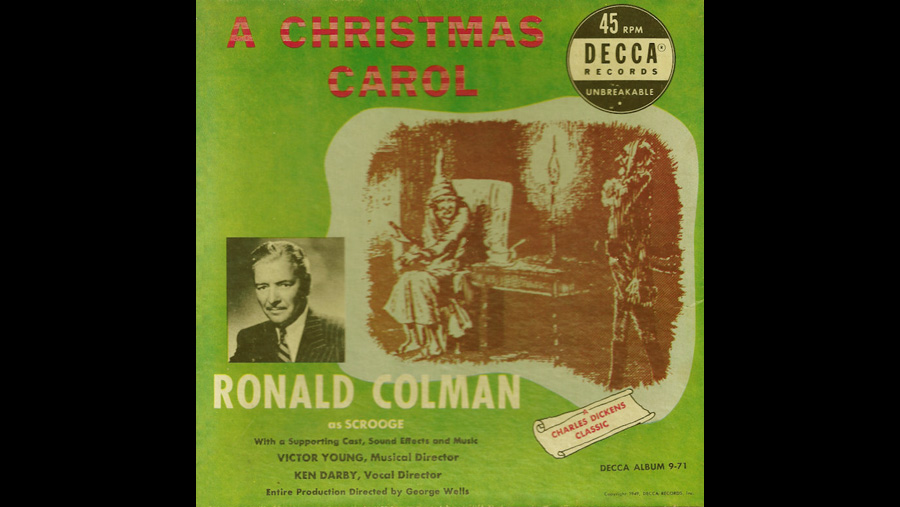

1941

CAST
Ebenezer Scrooge
-
Ronald Colman
Bob Cratchit
-
Eric Snowden
Mrs. Cratchit
-
Heather Thatcher
Tiny Tim Cratchit
-
Barbara Jean Wong
Fred (Scrooge's nephew)
-
Fred Mackaye
Belle (Scrooge's sweetheart)
-
Duane Thompson
Marley's Ghost
-
Lou Merrill
Spirit of Christmas Past
-
Hans Conried
Spirit of Christmas Present
-
Cy Kendall
Spirit of Christmas Future
-
Gale Gordon
Boy
-
Stephen Muller
Mr. Portly
-
Ferdinand Munier
CREATIVE TEAM
Director
-
George Wells
Musical Director
-
Victor Young
Vocal Director
-
Ken Darby
PRODUCTION
Recorded in October 1941, and released in November of that year, a sobering thought considering the fact that Pearl Harbour was soon to be attacked, ushering the United States into World War II. Both A Christmas Carol and The Pickwick Papers (with Charles Laughton) were later included on a single 33 1/3 RPM LP, one of the most popular Decca albums ever made, selling well into the late 1960s. The LP version of A Christmas Carol, however, omitted two characters (the charity collectors) heard in the 78 RPM version